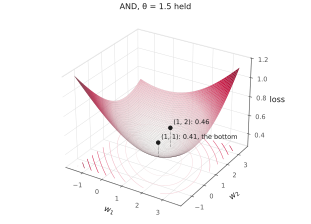

NJIT · CS 301 · INTRODUCTION TO DATA SCIENCE · FALL 2026 PDF
Meeting 5. The Neuron Feels Its Way
Act 1 Search Without Direction · Act 2 Search with Precision · Act 3 Search in the Fog
Meeting 2 asked whether a procedure, rather than a person, could find the weights of a unit. Meeting 4 gave us the number such a procedure needs: the loss of a setting, one number that says how well the setting explains the data. It did not choose a next setting. Every setting compared so far was chosen by hand.
This meeting looks at three ways to choose the next setting. The first tries settings at random and keeps the best. The second turns the truth table into equations and solves them. The third computes, at the current setting, which direction makes the loss decrease. The third way is the gradient of the loss, and the meeting derives it, checks it by hand against a direct measurement, and reads it as the slope of a surface that, for a unit with many inputs, nobody can see.
Act 1. Search Without Direction
1.1 Where we stand
The numbers a unit has — its weights and its bias — are its parameters. A two-input unit has three of them. For any setting of the parameters and any dataset, meeting 4 gives one number, the loss \(L\): on the AND table it goes toward zero as the weights grow, and on the weather data it has a floor near \(0.21\). What we do not yet have is any way to move from one setting to a better one.
1.2 Random search
Twenty-five people tried numbers until the table came out right. As a procedure: pick \((w_1, w_2, \theta)\) at random inside a box, compute the loss, keep the setting if its loss is the best so far, and repeat. This is random search. Its only ingredient beyond meeting 4 is the box. We use \([-6, 6]\) for each of the three numbers, the range the meeting-2 interactive page used.
On the AND table, one run gives the following best-so-far losses. After 1 guess, \(1.20\). After 10, \(0.43\). After 100, \(0.27\). After 1,000, \(0.11\), and at that point the best setting reproduces the table on all four rows. After 10,000, \(0.10\).
It works, and it works quickly, for a reason we can measure: about 2 percent of the box consists of settings that reproduce AND, so a random guess has roughly one chance in fifty. Across fifty runs, the first guess that reproduces AND arrived at guess 44 on average, and anywhere between the 1st and the 197th.
Notice the part the loss plays. It decides which guess to keep. Without a number that compares two settings there is no way to prefer one, and no search at all.
1.3 Grid search
The systematic version tries every combination of a fixed set of values per parameter: 25 values, \(-6, -5.5, \ldots, 6\), for each of the three numbers. This is grid search, and it costs \(25^3 = 15{,}625\) evaluations of the loss.
The best setting on the grid is \(\mathbf{w} = (4, 4)\), \(\theta = 6\), with loss \(0.096\). This is setting B of the meeting-4 sheet with every number doubled — the \(k = 4\) row of meeting 4’s scaling table, at the loss quoted there. The grid found by exhaustion what scaling found by hand.
1.4 What each extra parameter costs
Grid search has a cost that can be computed before running it. On a laptop, NumPy evaluates the loss of one setting on the 6,865 days in about half a millisecond, so a grid search gets through roughly 2,000 settings per second. Keep 25 values per parameter and count the parameters of units of increasing size:
| unit | parameters | evaluations | time |
|---|---|---|---|
| on (high, low) | 3 | \(25^3 \approx 16{,}000\) | 8 seconds |
| on all four measurements | 5 | \(25^5 \approx 10^{7}\) | 80 minutes |
| on all six columns of the file | 7 | \(25^7 \approx 6 \times 10^{9}\) | 35 days |
| a network of three units | 9 | \(25^9 \approx 4 \times 10^{12}\) | 60 years |
| forty inputs | 41 | \(25^{41} \approx 10^{57}\) | \(10^{46}\) years |
Each extra parameter multiplies the number of evaluations by 25. The rows of the table are two parameters apart, so each row costs 625 times the one above it. The unit on all four measurements is the one meeting 4 quoted the floor from, and a grid finds it in an hour and a half. Seven parameters is a month. Nine is a lifetime. The universe is about \(1.4 \times 10^{10}\) years old, and the last row does not fit in it.
Two adjustments are natural to propose, and both only postpone the problem. A coarser grid, 10 values per parameter instead of 25, still costs \(10^{40}\) evaluations for forty parameters. A smaller box has to be chosen well, and choosing it is the search problem again.
Random search has no grid to fill, and it fails more quietly. In forty dimensions the fraction of the box that reproduces the data is not one in fifty; it is one in a number with dozens of zeros, and a guess with that chance of success is not a method.
1.5 The same searches on the weather data
Random search over \((w_1, w_2, b)\), in the box \(w_1, w_2 \in [-0.5, 0.5]\) and \(b \in [-50, 50]\), best setting so far:
| guesses | best loss | days right |
|---|---|---|
| 10 | 2.08 | 54% |
| 100 | 0.257 | 90.5% |
| 1,000 | 0.240 | 90.0% |
| 10,000 | 0.219 | 91.0% |
| grid, 15,625 | 0.220 | 90.8% |
| the hand-drawn line | 0.245 |
| the best line on (high, low) | 0.217 |
Ten thousand random settings reach a loss of \(0.219\), against the hand-drawn line’s \(0.245\) and the best line’s \(0.217\), at the price of ten thousand passes over the data. Read the first row as well. After ten guesses the best setting is right on 54 percent of the days, which is close to a coin flip. Most random settings in this box are poor, because the weights multiply temperatures in the tens of degrees and a weight of \(0.4\) makes every score very large. The box had to be chosen carefully for the search to work at all, and the search did not choose it; we did.
1.6 What these searches lack
The ten-thousandth guess uses nothing that the first guess found. A guess with loss \(2.08\) and a guess with loss \(0.257\) are treated the same way, kept or discarded, and the next guess is drawn from the same box as if neither had happened. Every guess ignores every guess before it.
The eighteen people who moved the line toward the wrong corner were not guessing. They looked at where the line was and moved it in a direction. That is what random and grid search lack, and it is what Act 3 computes. Act 2 first, because thirty-five people did something else, and it is worth knowing exactly what it can and cannot do.
Act 2. Search with Precision
2.1 Reasoning from the table
Thirty-five people reasoned from the truth table before drawing anything. In various words, they wrote conditions like these:
| \(x_1\) | \(x_2\) | AND | so |
|---|---|---|---|
| 0 | 0 | 0 | \(0 < \theta\) |
| 0 | 1 | 0 | \(w_2 < \theta\) |
| 1 | 0 | 0 | \(w_1 < \theta\) |
| 1 | 1 | 1 | \(w_1 + w_2 \geq \theta\) |
The table became four conditions on the three numbers, and numbers were then found that satisfy all four. No guessing and no direction: the answer was computed from the requirements. Call this search with precision, and ask how far it goes.
2.2 Target scores make linear equations
The conditions above are inequalities: each says which side of zero a score must be on. Sharpen them into equations by asking each row not just for the right side but for a specific score — say \(-3\) on \((0,0)\), \(-1\) on \((0,1)\) and \((1,0)\), and \(+1\) on \((1,1)\). Each row is then one equation in the three unknowns:
The unknowns appear multiplied by numbers and added, and nothing else is done to them. Equations of this form are linear, and linear equations can be solved in a fixed number of steps.
Example 2.1 Weights from target scores
This is the first task of the meeting’s sheet. Solve the first three equations, then check the fourth.
The first equation gives \(\theta = 3\) directly. The second becomes \(w_2 - 3 = -1\), so \(w_2 = 2\). The third becomes \(w_1 - 3 = -1\), so \(w_1 = 2\). Now put these into the fourth: \(w_1 + w_2 - \theta = 2 + 2 - 3 = 1\), which is the target. All four equations hold. The setting is \((w_1, w_2, \theta) = (2, 2, 3)\), which is setting B of the meeting-4 sheet; its scores there were \(-3, -1, -1, 1\), and that is where these targets came from.
Now change the last target to \(+3\) and leave the other three. The first three equations have not changed, so they give \((2, 2, 3)\) again. The fourth now reads \(2 + 2 - 3 = 3\), that is, \(1 = 3\), which is false. There is no setting that hits all four targets.
Four equations in three unknowns usually have no exact solution. When they do not, they say only that no setting hits the targets. They do not say how close \((2, 2, 3)\) came, or whether some other setting comes closer. To ask “which setting comes closest” we need a measure of closeness, and the loss is one.
2.3 What a linear system is
A linear system is a set of unknowns \(w_1, \ldots, w_n\) together with equations, each of which sets a weighted sum of the unknowns equal to a number. In matrix form the system is \(A\mathbf{w} = \mathbf{t}\): each row of \(A\) holds the weights of one equation, and \(\mathbf{t}\) holds the targets.
When there are \(n\) equations in \(n\) unknowns and the equations are independent — none is a combination of the others — the system has exactly one solution, and a computer finds it by elimination, the method of MATH 337. In NumPy that is a single call:
w = np.linalg.solve(A, t)
No guessing and no loop. Three unknowns take no measurable time; three thousand take a fraction of a second. The cost grows as \(n^3\), the cube of the number of unknowns. When a problem can be written as a linear system, it is not searched. It is solved.
2.4 Why solving does not finish the job
Three reasons, in increasing order of seriousness.
The targets were invented. Nobody gave us \((-3, -1, -1, 1)\). A truth table gives labels, and a label says which side of zero the score should be on, not what number it should be. Meeting 4 showed that on a truth table the loss prefers scores as far from zero as possible, on the correct side, and “as far as possible” is not a target.
Even with targets, the weather data has no solution. It has 6,865 rows, hence 6,865 equations, in three unknowns, and no choice of targets makes them consistent: days with the same high and low occur in both halves of the year, and one setting gives such days one score. The question has to become “which setting comes closest,” and closest by what measure is what the loss was built to answer.
The condition we want is not linear. What we want is the setting at which the loss is smallest. Act 3 writes that condition as a set of equations in the weights. They are not linear, because the sigmoid sits between the weights and the loss, and there is no solve for them.
Act 3. Search in the Fog
3.1 The loss as a surface
A two-input unit has three parameters. Hold the threshold fixed and two remain, so the loss is a number for every point of the \((w_1, w_2)\) plane. A number over a plane is a surface, and it can be drawn.

This is the loss on the AND table with \(\theta = 1.5\) held. It is a bowl. Its lowest point is \(\mathbf{w} = (1, 1)\), at loss \(0.406\) — setting A of the meeting-4 sheet, which you computed as \(0.41\) without knowing it was the lowest point of anything. Meeting 2’s opening unit, \(\mathbf{w} = (1, 2)\), sits on the side of the bowl at \(0.463\).
One thing about this picture needs to be reconciled with meeting 4. Meeting 4 said, correctly, that on a truth table the loss goes toward zero as all three parameters scale up together. The surface above has a lowest point at \(0.406\) because \(\theta\) is frozen at \(1.5\): with the threshold fixed, the weights can grow only so far before the rows \((0, 1)\) and \((1, 0)\) start to fire, and the loss rises again. Both statements are true. The surface is a two-dimensional slice of a three-dimensional landscape that has no lowest point, drawn as a slice so that it fits on a page.
3.2 The same surface on the weather data

The loss on the weather data, over the weights for the high and the low, with \(b = -12\) held. The shape is different: a narrow valley running diagonally, with steep sides. The lowest point is near \(\mathbf{w} = (0.03, 0.20)\), at loss \(0.218\), where the unit places 91.0 percent of the days correctly. The hand-drawn line, \(\mathbf{w} = (0.1, 0.1)\), lies in the valley at \(0.245\). A setting like \((0.3, 0.3)\) is far up the side at loss \(6.8\), which is why the picture cuts the sides off.
The valley has an explanation. A day’s high and its low rise and fall together, so every setting along the valley floor, where \(w_1 + w_2\) is about \(0.24\), draws nearly the same line through the (high, low) plane and gets nearly the same days right. Moving along the valley changes the loss slowly; moving across it changes the loss quickly.
You can turn both surfaces with the mouse on the interactive page, The loss landscape, linked from Canvas; the floor of the page shows the same loss as a map.
3.3 Slope, and the gradient
From the picture to a number. Stand at a point of the surface and move a small distance in the \(w_1\) direction only, holding \(w_2\) fixed. The loss changes by some amount. The ratio of the change in the loss to the distance moved, in the limit of small moves, is the slope of the surface in that direction. It is the derivative of \(L\) with respect to \(w_1\) with \(w_2\) held fixed, written \(\partial L / \partial w_1\) and called a partial derivative. It is the derivative of MATH 111, applied to one variable while the other is treated as a constant. The slope in the \(w_2\) direction, \(\partial L / \partial w_2\), is defined the same way with the roles exchanged.
The vector of all the slopes,
is the gradient of \(L\) at that point. One fact about it is the reason for this act: the gradient points in the direction in which the surface rises fastest from where you stand, so \(-\nabla L\) points in the direction in which it falls fastest. That direction is straight downhill.
Two things a slope is not. It is not the count of wrongly placed days. Meeting 4 observed that the count does not change under small moves of the line, so the count is constant on each piece of the plane and its derivative is zero wherever it exists; a search following its slope would receive no direction at all. And a slope is not a fact about the whole surface. It is measured where you stand, and it says nothing about the surface anywhere else.
3.4 The slope of one row’s contribution
The loss is the mean of the contributions of the rows, so its slope is the mean of their slopes. Take one row and write \(\ell\) for its contribution to the loss, as a function of that row’s score \(s\). From meeting 4, with \(\hat y = \sigma(s)\) for the unit’s output on the row:
One fact about the sigmoid does the work. Write \(\sigma(s) = (1 + e^{-s})^{-1}\) and differentiate:
since \(e^{-s}/(1 + e^{-s}) = 1 - 1/(1 + e^{-s})\). The derivative of the sigmoid is the sigmoid times one minus the sigmoid.
Now differentiate each case of \(\ell\) with the chain rule. For a row with label \(1\),
For a row with label \(0\),
In both cases,
Define the row’s error as its output minus its label, \(\hat y - y\). The slope of a row’s contribution to the loss, with respect to that row’s score, is the row’s error. The two cases of \(\ell\), which meeting 4 defined separately and then combined with the label as a switch, have a single derivative.
3.5 How large the error can be
Three facts about the error, in order.
A row the unit already gets right with confidence has \(\hat y\) close to \(y\), so its error is close to \(0\), and its slope is close to \(0\). Such a row contributes almost nothing to the gradient.
A row the unit gets wrong with confidence has \(\hat y\) close to \(1 - y\), so its error is close to \(+1\) if the label is \(0\) and close to \(-1\) if the label is \(1\). Such a row contributes the most.
The output \(\hat y\) is strictly between \(0\) and \(1\), so the error satisfies \(|\hat y - y| < 1\) on every row. The bound is approached but never reached. One row can never contribute a slope larger than \(1\) in absolute value.
The consequence to carry forward: the rows the unit already handles well are nearly silent, and the rows it is confidently wrong about contribute the most. A move downhill is driven mostly by the unit’s own mistakes.
3.6 The gradient of the loss
The score is \(s = w_1 x_1 + w_2 x_2 + b\), so \(\partial s / \partial w_1 = x_1\), \(\partial s / \partial w_2 = x_2\), and \(\partial s / \partial b = 1\). The loss is the mean of the row contributions, \(L = \frac{1}{n}\sum_i \ell_i\). By the chain rule, the slope of \(L\) with respect to \(w_j\) is the mean over the rows of (slope of \(\ell_i\) with respect to \(s_i\)) times (slope of \(s_i\) with respect to \(w_j\)):
Here \(x_{ij}\) is the \(j\)-th input of row \(i\). In matrix form, with \(X\) the array whose rows are the inputs and \(\hat{\mathbf y} - \mathbf y\) the vector of errors,
which is the transpose of meeting 2 doing its first real job. The factor \(1/n\) is there because the loss is a mean over the rows, so its gradient is a mean too.
Read the formula in words. Each row contributes its own input vector \(\mathbf{x}_i\), multiplied by its error. A row with label \(1\) that the unit under-predicts has a negative error, so \(-\nabla L\) moves \(\mathbf{w}\) toward \(+\mathbf{x}_i\), which raises the score on that row. A row with label \(0\) that the unit over-predicts has a positive error, and \(-\nabla L\) moves \(\mathbf{w}\) toward \(-\mathbf{x}_i\), which lowers the score there. Rows the unit already has right contribute almost nothing. The gradient is the sum of these contributions, and moving against it lowers the loss.
Example 3.1 At meeting 2’s opening unit
Compute the gradient at \(\mathbf{w} = (1, 2)\), \(\theta = 1.5\), the unit that places the corner \((0, 1)\) on the wrong side. Sigmoid values are rounded to two decimals.
| row | label \(y\) | score \(s\) | output \(\hat y = \sigma(s)\) | error \(\hat y - y\) |
|---|---|---|---|---|
| \((0,0)\) | 0 | \(-1.5\) | 0.18 | \(+0.18\) |
| \((0,1)\) | 0 | \(+0.5\) | 0.62 | \(+0.62\) |
| \((1,0)\) | 0 | \(-0.5\) | 0.38 | \(+0.38\) |
| \((1,1)\) | 1 | \(+1.5\) | 0.82 | \(-0.18\) |
For \(\partial L/\partial w_1\), multiply each error by that row’s \(x_1\) and average: only the rows \((1,0)\) and \((1,1)\) have \(x_1 = 1\), so
For \(\partial L/\partial w_2\), the rows with \(x_2 = 1\) are \((0,1)\) and \((1,1)\):
For the bias, every row has \(x = 1\) in the bias position, so \(\partial L/\partial b\) is the mean of all four errors, \((0.18 + 0.62 + 0.38 - 0.18)/4 = 0.25\). Since \(\theta = -b\), the slope with respect to \(\theta\) is the negative of this: \(\partial L/\partial\theta = -0.25\).
Downhill is \(-\nabla L\): decrease \(w_2\) (the largest slope among the weights), decrease \(w_1\) a little, and increase \(\theta\). On the unit square of meeting 2, decreasing \(w_2\) and raising \(\theta\) move the line away from the origin on the \(x_2\) side — toward the corner \((0,1)\), the one that was wrong. Moving the line toward the wrong corner is what eighteen people wrote that they did at meeting 2. The formula is that instruction, made exact, and it applies when there is no picture to look at.
Example 3.2 The slope, two ways
This is the second task of the meeting’s sheet, and the check that Task 3 of the assignment asks for in code. The same setting, \(\mathbf{w} = (1, 2)\), \(\theta = 1.5\), whose loss is \(0.46\). We want \(\partial L / \partial w_2\), and we compute it twice.
As a finite difference. Move \(w_2\) up to \(2.5\) and down to \(1.5\), leaving \(w_1 = 1\) and \(\theta = 1.5\), and compute the loss at each. The sheet supplies the sigmoid and logarithm values.
At \(w_2 = 2.5\) the scores are \(-1.5, +1, -0.5, +2\). The probabilities of the observed labels are \(0.82, 0.27, 0.62, 0.88\) (on the second row the label is \(0\) and \(\sigma(1) = 0.73\), so \(p = 1 - 0.73 = 0.27\)). The contributions \(-\ln p\) are \(0.20, 1.31, 0.48, 0.13\), and the loss is their mean, \(2.12/4 = 0.53\).
At \(w_2 = 1.5\) the scores are \(-1.5, 0, -0.5, +1\). The probabilities are \(0.82, 0.50, 0.62, 0.73\); the contributions are \(0.20, 0.69, 0.48, 0.32\); the loss is \(1.69/4 = 0.42\).
The slope is approximately the change in the loss over the change in \(w_2\):
By the formula. At \(w_2 = 2\) the outputs are \(0.18, 0.62, 0.38, 0.82\), as in Example 3.1, and the rows with \(x_2 = 1\) are the second and the fourth: \((0.62 - 0.18)/4 = 0.11\).
The two agree to two decimals. The finite difference is the definition of the slope, approximated with a step of size \(1\) in each direction; the formula is the same quantity computed exactly. Moving \(w_2\) only upward, to \(2.5\), and dividing by \(0.5\) gives \(0.13\); moving only downward gives \(0.08\); the two-sided estimate, \(0.11\), is the more accurate one.
Why the formula is worth having when the finite difference gives the same number: a finite difference costs one extra evaluation of the loss per parameter. With forty parameters that is forty passes over the data for one gradient. The formula gives all forty slopes in a single pass, because every row’s error is computed once and then multiplied by that row’s inputs. In the assignment notebook the finite difference is the check on the formula, not the method.
3.7 Why the minimum has no formula
Act 2 promised a reason. The lowest point of a bowl is where the surface is flat in every direction: \(\nabla L = 0\), that is,
These are equations in the parameters, and there are exactly as many equations as parameters. But \(\hat y_i = \sigma(w_1 x_{i1} + w_2 x_{i2} + b)\), and the unknowns sit inside the sigmoid. The equations are not weighted sums of the unknowns; they are not linear; elimination does not apply, and np.linalg.solve cannot be used. Search with precision is not available for this loss, and not for any quantity with a sigmoid between the parameters and the output.
What we can compute, at any setting, is the gradient there.
3.8 Feeling the way down

The picture above shows the AND surface as it would look from a point on it in thick fog: only the ground within a small radius of the point \((1, 2)\) is visible, with the downhill direction \(-\nabla L\) drawn as an arrow at that point. You cannot see the bowl or its lowest point. You can compute which way the ground falls, and that is what the gradient is: a measurement taken at the point where you stand, not a view of the landscape. Move a short distance downhill, compute the gradient at the new point, move again.
This matters because the pictures in this act exist only because two weights fit on a page. A unit with forty inputs has forty-one parameters, its loss is a function of forty-one variables, and there is no surface to draw. The gradient formula does not depend on how many parameters there are: every row’s error, times that row’s inputs, averaged. It is computed the same way in two dimensions and in forty-one.
On the interactive page, switch fog on. The surface disappears and a patch of ground around the marked point remains, with the downhill arrow on it. Press step downhill: the page moves the point a fixed distance in the direction \(-\nabla L\), a distance the page chose, and computes the gradient again at the new point. From \((1, 2)\) on the AND surface the loss goes \(0.463\), \(0.437\), \(0.424\), \(0.417\), \(0.413\), and the point moves toward \((1, 1)\) without the surface ever being shown. Switch the fog off afterwards and the path is where the eye would have gone. On the weather surface, from the hand-drawn line, the loss goes \(0.245\), \(0.232\), \(0.229\), \(0.229\), and then decreases slowly along the valley toward \(0.218\). Press random guess a few times on either surface for the contrast with Act 1: the point lands anywhere in the box, and the next guess uses nothing about where the last one landed.
3.9 What has been done, and what has not
Two results.
A search that ignores what it has learned — random or grid — works for three parameters and is impractical long before forty, because each extra parameter multiplies its cost by a fixed factor. A search that solves for the answer works only when the requirements are linear in the unknowns, and the condition “the loss is smallest” is not.
The gradient of the loss, \(\frac{1}{n}\sum_i (\hat y_i - y_i)\,\mathbf{x}_i\), is the slope of the surface at the current setting. It is computed from the data in one pass, it points in the direction of steepest increase, so \(-\nabla L\) points in the direction of steepest decrease, and on the AND table it is the direction that eighteen people found by eye at meeting 2.
What has not been done: no step has been taken. Knowing which way is downhill is not the same as moving, and a single step is not yet a procedure — the gradient has to be computed again at the new point, and again after that, and something has to decide how far to move and when to stop.